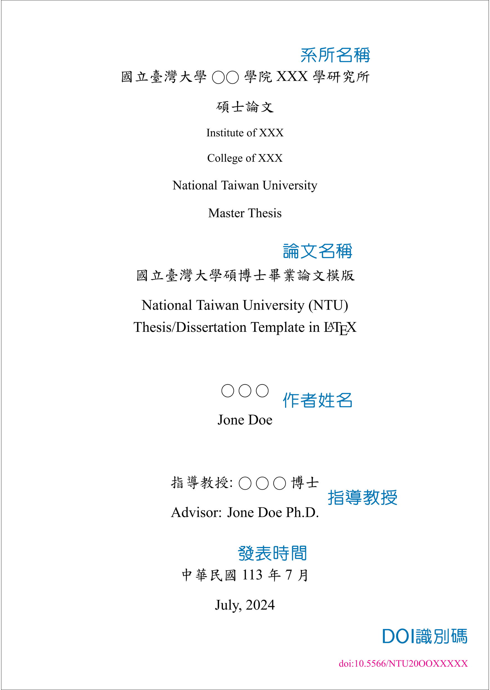
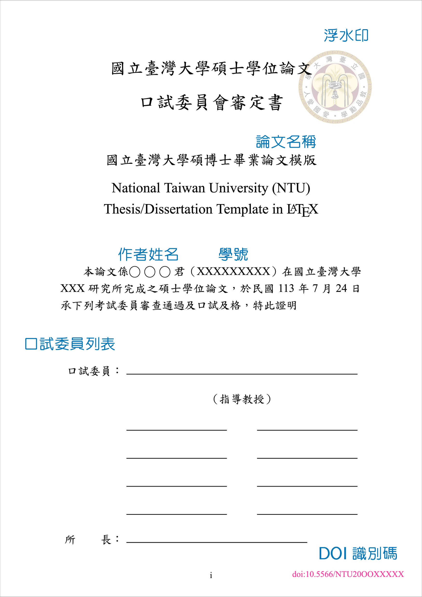

flowchart LR
A[載入模板] --> B{選擇中英文}
B --> C[中文]
B --> D[英文]
LaTeX 教學系列：論文與履歷
latex
利用 LaTeX 撰寫論文與編寫履歷
撰寫學術論文時，許多研究生和學者常常面臨文書處理軟體帶來的挑戰，這些問題不單單會嚴重影響寫作效率和品質，更可能會耗費心神。舉例來說，在使用 Word 時，格式設定往往是一大難題。為了符合不同出版刊物的要求，研究者可能需要反覆調整諸如縮排、行距、分頁和引用格式等細節，這不僅耗時，還可能因為頻繁的格式變更而導致內容出錯（也就是俗稱的跑版）。此外，在處理複雜的學術文件時，這類軟體的效能問題也不容忽視。隨著論文篇幅增加，加入大量圖表後，檔案的開啟和編輯速度可能大幅下降，甚至造成系統不穩定。這種情況不僅打斷了思路，還可能造成工作進度的延誤。而學術寫作中的版本控制同樣是一個棘手的問題。在與指導教授或同儕進行多輪修改討論後，追蹤變更和比較不同版本之間的差異往往變得困難重重。這不僅影響了協作效率，也增加了出錯的風險。
另一個值得注意到的問題是數學公式的處理。在 Word 裡面雖說也可以插入方程式，並用 TeX 語法進行編輯，但是編輯複雜的數學表達式不僅費時費力（有時打法不同於 LaTeX，要打完之後按下 Tab 鍵），最終的呈現效果也常常不盡人意，無法達到專業期刊的水準。
傳統文書處理工具在學術寫作中的種種限制，促使我們思考：是否有更適合學術寫作的替代方案？看過前面幾篇文章的你，應該深感 LaTeX 的好用之處，雖說需要在前面設定很多內容，但是網路這麼發達，只要在搜尋列上面輸入相關文件模板，一定可以找到很多好人分享的內容。
這篇文章主要提到的內容即是如何用 LaTeX 撰寫學術論文，不過因為各個期刊的要求不一，因此將會以臺灣各大學的碩、博士論文格式作為主軸講解，還望讀者海涵。另外，本篇文章後半部則會講解用 LaTeX 排版論文的技巧與好處。
由於本篇文章牽涉的內容較為應用，因此會在文末放上一些在 Overleaf 上筆者覺得還不錯的模板，讀者可以前往使用或下載。
論文排版
根據臺灣大學圖書館提供的運用LaTeX寫論文教學檔案指出，一篇好的學位論文，應該至少需要分成以下幾個部分：
- 封面（標題、作者）
- 致謝
- 摘要
- 目錄（含圖、表）
- 本文（章節）
- 附錄
- 參考文獻
不過更細節的格式與規定因各間大學有異，請查明後再開始撰寫，切勿以本篇作為唯一依據。在上半部的討論中，會以 Overleaf 上的模板國立臺灣大學碩博士學位論文 LaTeX 模板作為教學範例，其中部分設定內容需 參考筆者撰寫的LaTeX 教學系列：sty 與 cls 檔這篇文章。
論文資料夾架構
撰寫論文的過程中，良好的資料夾架構不僅能幫助我們有條不紊地整理資料，更能提高撰寫效率，避免重要文件的遺失或混淆1。依據本文所使用的模板，筆者繪製出以下的樹狀圖供參考：
% 國立臺灣大學碩博士學位論文 LaTeX 模板
├── back
│ ├── appendix01.tex
│ ├── appendix02.tex
│ └── references.bib
├── contents
│ ├── chapter01.tex
│ ├── chapter02.tex
│ ├── chapter03.tex
│ └── chapter04.tex
├── figures
│ ├── seal.pdf
│ └── seal.svg
├── fonts
│ ├── chinese
│ │ ├── BiauKai.ttf
│ │ ├── Kaiti-Black.ttf
│ │ ├── Kaiti-Bold.ttf
│ │ ├── Kaiti.ttf
│ │ └── WHZ_Kai-Bold.ttf
│ └── english
│ ├── Times New Roman-Bold.ttf
│ ├── Times New Roman-BoldItalic.ttf
│ ├── Times New Roman-Italic.ttf
│ └── Times New Roman.ttf
├── front
│ ├── abstract.tex
│ ├── acknowledgement.tex
│ └── denotation.tex
├── latexmkrc
├── main.tex
├── ntusetup.tex
└── ntuthesis.cls我們可以很清楚的看到，一個好的論文資料夾應該要將論文架構分隔開來，存放在不同的資料夾。而資料夾的名稱也不是隨便亂命名的，通常我們不會將資料夾名稱命名為中文，也盡量不會超過十個字符。
從上面的樹狀圖可以看到，我們其實已經講過許多內容。從一開始的標題頁設定，到修改字體、插入圖片與表格，以及最重要的數學排版，都在前面的文章提過，如果忘記的話，還煩請讀者回去複習之前的內容。
本篇文章將著重在討論以下幾個重要部分：
封面頁、摘要等環境設定
加入目錄（包含目錄、圖表目錄）
論文附錄設計
參考文獻
論文封面頁
論文的封面頁是整篇論文的門面，給人留下第一印象的關鍵。不僅展示了論文的標題和作者資訊，更傳遞了研究的專業性和嚴謹性。一個設計合理、內容完整的封面頁，能夠有效地吸引讀者的注意，並為論文的正式內容鋪設一個專業的基調。
我們來看一下論文封面頁的範例：

論文的封面頁可以分為幾個部分：系所名稱、論文名稱、作者姓名、指導教授、發表日期與 DOI 識別碼。以下我們分成兩個部分來講，第一個是論文資訊，第二部分則是日期設定。
論文資訊
誠如上述所言，論文資訊是一篇論文最重要的部分，才能夠讓讀者一眼明白這篇論文的內容。這份模板設定了以下鍵值來儲存這些資訊：
| 鍵值 | 功能 | 鍵值 | 功能 |
|---|---|---|---|
university |
中文大學名稱 | university* |
英文大學名稱 |
college |
中文學院名稱 | college* |
英文學院名稱 |
institute |
中文研究所名稱 | institute* |
英文研究所名稱 |
title |
中文論文標題 | title* |
英文論文標題 |
author |
中文作者名稱 | author* |
英文作者名稱 |
ID |
學號 | advisor |
中文指導教授名稱 |
advisor* |
英文指導教授名稱 | DOI |
DOI 識別碼 |
keywords |
中文關鍵字 | keywords* |
英文關鍵字 |
date |
發表日期（預設為當前日期） | oral-date |
口試日期（預設為當前日期） |
模板設定的思路如下：由於我們需要將這些資訊儲存起來，否則一個個輸入會十分麻煩，因此我們需要先在類別文件（此模板為 ntuthesis.cls 檔）中設定選項：
% 設定選項
\SetupKeyvalOptions{
family=ntu, % 設定家族名稱為 ntu
prefix=ntu@, % 設定前綴字為 ntu@
setkeys=\kvsetkeys % 設定鍵值配對處理函數為 \kvsetkeys
}
% 定義一個新指令 \ntusetup，用來設定 ntu 家族的鍵值配對
\newcommand{\ntusetup}{
\kvsetkeys{ntu}
}
% 定義一個新指令 \ntu@define@key，用來定義新的鍵
\newcommand{\ntu@define@key}[1]{
\kvsetkeys{ntu@key}{#1}
}接著設定 ntu@key 家族的處理函數：
% 設定選項
\SetupKeyvalOptions{
family=ntu, % 設定家族名稱為 ntu
prefix=ntu@, % 設定前綴字為 ntu@
setkeys=\kvsetkeys % 設定鍵值配對處理函數為 \kvsetkeys
}
% 定義一個新指令 \ntusetup，用來設定 ntu 家族的鍵值配對
\newcommand{\ntusetup}{
\kvsetkeys{ntu}
}
% 定義一個新指令 \ntu@define@key，用來定義新的鍵
\newcommand{\ntu@define@key}[1]{
\kvsetkeys{ntu@key}{#1}
}
% 設定 ntu@key 家族的處理函數
\kv@set@family@handler{ntu@key}{%
\@namedef{ntu@#1@@name}{#1}% 定義 ntu@#1@@name 為當前鍵的名稱
\def\ntu@@default{}% 初始化 ntu@@default 為空
\def\ntu@@choices{}% 初始化 ntu@@choices 為空
% 定義 ntu@value 家族的 name 鍵，將其值存入 ntu@#1@@name
\kv@define@key{ntu@value}{name}{%
\@namedef{ntu@#1@@name}{##1}%
}%
% 定義 ntu@value 家族的 code 鍵，將其值存入 ntu@#1@@code
\kv@define@key{ntu@value}{code}{%
\@namedef{ntu@#1@@code}{##1}%
}%
\@namedef{ntu@#1@@check}{}% 初始化 ntu@#1@@check 為空
\@namedef{ntu@#1@@code}{}% 初始化 ntu@#1@@code 為空
% 定義 ntu@#1@@hook，用來在類別文件結束時執行相關程式碼
\@namedef{ntu@#1@@hook}{%
\expandafter\ifx\csname\@currname.\@currext-h@@k\endcsname\relax
\@nameuse{ntu@#1@@code}%
\else
\AtEndOfClass{%
\@nameuse{ntu@#1@@code}%
}%
\fi
}%
...設定完畢後，由於我們可以允許使用者填寫自己的大學、系所名稱、姓名等資訊，因此需要設定如何讓 ntu@value 接收填寫的參數。此外，如果使用者不想要修改參數，想要沿用系統預設的參數，我們也需要設定預設的值為何：
\kv@define@key{ntu@value}{choices}{%
\def\ntu@@choices{##1}% 將傳入的 choices 參數值賦給臨時變數 \ntu@@choices
\@namedef{ntu@#1@@reset}{}
\@namedef{ntu@#1@@check}{
\@ifundefined{% 檢查指令是否未定義
ifntu@\@nameuse{ntu@#1@@name}@\@nameuse{ntu@\@nameuse{ntu@#1@@name}}% 檢查 ifntu@<name>@<value> 是否未定義
}{
\ntu@error{Invalid value "#1 = \@nameuse{ntu@\@nameuse{ntu@#1@@name}}"}% 顯示錯誤資訊，指出無效的值為何
}%
\@nameuse{ntu@#1@@reset}% 調用 ntu@<key>@@reset 指令
\@nameuse{ntu@\@nameuse{ntu@#1@@name}@\@nameuse{ntu@\@nameuse{ntu@#1@@name}}true}% 設定 ntu@<name>@<value> 為 true
}%
}%
% 將傳入的 default 參數值賦給臨時變數 \ntu@@default
\kv@define@key{ntu@value}{default}{%
\def\ntu@@default{##1}
}%
% 設定 ntu@value 家族的鍵值配對
\kvsetkeys{ntu@value}{#2}
\@namedef{ntu@\@nameuse{ntu@#1@@name}}{}
% 定義 ntu@choice 家族的處理函數
\kv@set@family@handler{ntu@choice}{
\ifx\ntu@@default\@empty
\def\ntu@@default{##1}% 如果 \ntu@@default 為空，則設定其值
\fi
\expandafter\newif\csname ifntu@\@nameuse{ntu@#1@@name}@##1\endcsname
\expandafter\g@addto@macro\csname ntu@#1@@reset\endcsname{
\@nameuse{ntu@\@nameuse{ntu@#1@@name}@##1false}% 將 false 新增到 ntu@<name>@<value>
}%
}%
% 展開並設定 ntu@choice 家族的鍵值配對
\kvsetkeys@expandafter{ntu@choice}{\ntu@@choices}
\expandafter\let\csname ntu@\@nameuse{ntu@#1@@name}\endcsname\ntu@@default% 將指令 ntu@<name> 設定為 \ntu@@default 的值
\expandafter\ifx\csname ntu@\@nameuse{ntu@#1@@name}\endcsname\@empty\else
\@nameuse{ntu@#1@@check}% 如果指令 ntu@<name> 不為空，則調用 ntu@<key>@@check
\@nameuse{ntu@#1@@hook}% 調用 ntu@<key>@@hook
\fi
% 定義 ntu 家族的鍵 #1
\kv@define@key{ntu}{#1}{
\@namedef{ntu@\@nameuse{ntu@#1@@name}}{##1}
\@nameuse{ntu@#1@@check}% 調用 ntu@<key>@@check
\@nameuse{ntu@#1@@hook}% 調用 ntu@<key>@@hook
}%設定完成後，使用者就可以在設定檔案（configuration）中將這些參數一一填入。為了不與主文件混淆，模板新增了一個檔案 ntusetup.tex，將設定資訊放在裡面，並在主文件以 \input{ntusetup} 調用。程式碼如下所示，使用 \ntu@define@key 一次性逐層定義多個指令，言下之意就是遞迴地將這些選項丟進去鍵值配對。
\ntu@define@key{
university = {
default = {國立臺灣大學},
},
university* = {
default = {National Taiwan University},
name = university@en,
},
college = {
default = {工學院},
},
college* = {
default = {College of Engineering},
name = college@en,
},
institute = {
default = {工業工程學研究所},
},
institute* = {
default = {Institute of Industrial Engineering},
name = institute@en,
},
title = {
default = {論文標題},
},
title* = {
default = {Title},
name = title@en,
},
author = {
default = {論文作者},
},
author* = {
default = {Name of author},
name = author@en,
},
ID = {
default = {學號},
},
advisor = {
default = {指導教授},
},
advisor* = {
default = {Name of supervisor},
name = advisor@en,
},
DOI = {
default = {DOI Number},
},
keywords = {
default = {關鍵字},
},
keywords* = {
default = {Keywords},
name = keywords@en,
},
date = {
default = {\the\year-\two@digits{\month}-\two@digits{\day}},
},
oral-date = {
name = oraldate,
default = {\the\year-\two@digits{\month}-\two@digits{\day}},
},
}至於為何有兩個名稱相同的參數，但後面跟上星號呢？聰明的你應該猜到了，就是定義英文的名稱。不過再裡面我們可以看到兩個細節：第一，設定英文名稱時，特別使用了 name=arg_name@en；第二，日期設定為 default={\the\year-\two@digits{\month}-\two@digits{\day}}，以下我們一一解釋。
設定封面英文名稱
臺灣的論文資訊大部分都需要提供中英文版本，一方面是為了能夠讓非中文母語使用者也看得懂，另一方面則是提高文獻國際知名度（僅為筆者臆測，需查明）。
我們先看一下上面對於論文資訊的設定，我們可以看到英文名稱的預設為中文名稱，這點其實很好猜想，既然沒有要求英文，那就用中文吧！英文設定就簡單多了，如果有輸入值，就會將值存入到 arg_name@en 中並取代預設值。
日期設定
由於臺灣大部分還是會使用「民國紀年」，也就是年份以「中華民國×××年」、「民國×××年」、「民×××」等方式表示。此種紀年方式以 1912 年中華民國建立為元年，因此與西元紀年相差 1911 年，故如果給定西元 \(x\) 年，則轉換後會得到民國 \(x - 1911\) 年，其中 \(x \geq 1912\)（年份必須為非零整數）。
模板的設定邏輯如下：
首先，將日期字串分解成年、月、日，然後調用格式化指令。
將年份格式化為中文數字，並將月份格式化為中文數字，輸出格式為
YYYY 年 MM 月。中文年份顯示部分，將年份轉換為民國年份，並格式化為
民國 YYY 年 MM 月 DD 日或民國 YYY 年 MM 月。英文年份顯示部分，則將月份轉換為英文月份名稱，並格式化為
Month, Year，其中Year為西元紀年。
綜合上面的設定邏輯，我們可以得到以下的程式碼：
% 定義指令 \ntu@format@date 拆分字串
\newcommand{\ntu@format@date}[2]{%
\edef\ntu@@date{#2}%
\def\ntu@@process@date##1-##2-##3\@nil{%
#1{##1}{##2}{##3}%
}%
\expandafter\ntu@@process@date\ntu@@date\@nil
}
% 將年份格式化為中文數字
\newcommand\ntu@date@zh@short[3]{\zhdigits{#1}年\zhnumber{#2}月}
% 將年份格式化為「民國 YYY 年 MM 月 DD 日」
\newcommand\ntu@date@zh@digit[3]{\the\numexpr#1-1911\relax~年~\number#2~月~\number#3~日}
% 將年份格式化為「民國 YYY 年 MM 月」
\newcommand\ntu@date@zh@digit@short[3]{\the\numexpr#1-1911\relax~年~\number#2~月}
% 將年份格式化為西元紀年
\newcommand\ntu@date@en@short[3]{\monthname[#2], #1}生成封面
將上面的資訊整合起來後，就可以生成封面頁了嗎？如果這樣想的話就太天真了，LaTeX 不可能這樣輕易放過你簡單就可以完成。
設定封面頁我們需要進行版面設定，然後安排這些接收參數的指令在封面頁的位置。版面設定就需要使用到先前學過的眾多知識，包含字體大小設定、版面設定等。在類別文件最前面，我們使用 \newcommand{\ntu@geometry@cover}{top=3cm, bottom=3cm, left=3cm, right=3cm} 將封面頁的版面設定資訊儲存起來。
設定完成後，建立指令 makecover 用於生成封面頁。根據論文封面頁的設定，我們可以用以下的方式將封面頁的外觀勾勒出來。注意到我們需要將封面頁以 titlepage 環境包住，原因在於論文的類別為 report2。
\newcommand{\makecover}{
\ntu@setgeometry{\ntu@geometry@cover}
\begin{titlepage}
\begin{singlespace}
\begin{center}
% 中文校系名稱 (18, 27)
\fontsize{18}{27}\selectfont
\ntu@university\ntu@college\ntu@institute\par
\ntu@degree\ntu@type\par
% 英文系所名稱 (14, 21)
\fontsize{14}{21}\selectfont
\ntu@institute@en\par
\ntu@college@en\par
% 英文學校名稱 (16, 24)
\fontsize{16}{24}\selectfont
\ntu@university@en\par
\ntu@degree@en~\ntu@type@en\par
% 中英文論文題目 (18, 27)
% 中英文作者姓名 (18, 27)
% 中英文指導教授 (18, 27)
% 論文撰寫日期 (18, 27)
\vfill
\fontsize{18}{27}\selectfont
\ntu@title\par\ntu@title@en\par
\vfill
\ntu@author\par\ntu@author@en\par
\vfill
指導教授: \ntu@advisor~博士\par
Advisor: \ntu@advisor@en~Ph.D.\par
\vfill
中華民國~\ntu@format@date{\ntu@date@zh@digit@short}{\ntu@date}\par
\ntu@format@date{\ntu@date@en@short}{\ntu@date}
\end{center}
\end{singlespace}
\end{titlepage}
% 清除頁碼
\clearpage
\restoregeometry
}上面的程式碼將使用者在 ntusetup.tex 的值丟進來，並進行排版。注意到在設定時我們使用 \par 指令，這是之前沒有提及的部分。此指令用於建立一個新段落，它會在目前位置插入一個空行，並開啟一個新的段落。此外，版面設定需要使用 geometry 套件，因此在開始上面的程式碼前，我們使用 \RequirePackage{geometry} 將此套件載入。
口委審定書、符號列表、誌謝與摘要
在論文撰寫的過程中，除了封面頁、內文、參考文獻與附錄本身，還有許多重要的組成部分需要特別注意。前面我們已經討論過論文封面頁的製作，接下來我們要深入探討幾個同樣重要的元素：口試委員審定書、符號列表、誌謝詞以及摘要。雖然這些不是論文的主要內容，但在呈現研究成果、傳達作者想法，以及幫助讀者理解論文的方面扮演著不可或缺的角色。
口試委員審定書是論文正式通過的重要證明，不僅代表了研究成果得到了學術認可，更是菸酒生研究生、博士生多年努力的具體肯定。而對於理工科系或需要大量使用到數學的研究生、博士生、研究者而言，符號列表則是為讀者提供了一個快速參考的工具，能大大提高閱讀的效率和理解的準確性。
誌謝詞讓我們有機會表達對在研究過程中給予幫助和支持的人的感激之情，除了是一種禮貌之外，更是對整個研究過程的回顧和總結。猶如陳之藩《謝天》提到的：
「無論什麼事情，得之於人者太多，出之於己者太少，因為要感謝的人太多了，不如謝天吧！
最後，摘要是各類論文（學位論文、期刊論文等）的濃縮與精華，必須準確而簡潔地呈現研究的核心內容，是吸引讀者繼續深入閱讀的關鍵所在。
口委審定書
由於口委審定書有特殊的格式，因此獨立於其他部分講解。一份好的口委審定書應該體現出論文的正式性和重要性。首先，它需要清晰地標示出這是哪一間大學、什麼學位論文的口試委員會審定書。其次，論文的相關資訊，如題目（通常包括中英文）、作者姓名和學號等，都應該清楚地呈現在審定書上。
審定書的核心內容是一段正式聲明，表明該論文已經通過口試委員會的審查並通過。聲明通常會包含具體的口試通過日期，以證明論文的時效性。在審定書的下半部分，最重要的是提供足夠的空間給所有口試委員簽名，通常包括指導教授的簽名欄，以及其他委員的簽名欄。除此之外，還需要有系所主管（通常是所長或系主任）的簽名欄，進一步確認論文的合法性。

建議口委審定書的頁面需要用到以下知識：版面設定、字體設定，以及表格。直接看程式碼：
\newcommand{\makeverification}{
\clearpage
\phantomsection
\ntu@setgeometry{\ntu@geometry@main}
\pagenumbering{roman}
\addcontentsline{toc}{chapter}{\ntu@verificationletter}
\begin{singlespace}
% 口委審定書標題 (24, 36) (26, 39)
% 論文題目 (20, 30)
\begin{center}
\fontsize{24}{36}\selectfont
{\ntu@university}{\ntu@degree}學位{\ntu@type}\par
\fontsize{26}{39}\selectfont
口試委員會審定書\par
\vfill
\fontsize{20}{30}\selectfont
{\ntu@title}\par
{\ntu@title@en}\par
\end{center}
% 口委審定書內容 (16, 24)
\vfill
\fontsize{16}{24}\selectfont
\Eindent
本論文係{\ntu@author}君（\ntu@ID）在{\ntu@university}{\ntu@institute}完成之{\ntu@degree}學位{\ntu@type}，於民國{\ntu@format@date{\ntu@date@zh@digit}{\ntu@oraldate}}承下列考試委員審查通過及口試及格，特此證明\par
\end{singlespace}
\begin{doublespace}
% 口委簽名表格 (16, 24)
\begin{center}
\vfill
\fontsize{16}{24}\selectfont
\begin{tabularx}{\textwidth}{Xl}
{\hfill}口試委員：{\hfill}& \rule{11.5cm}{1pt} \\
& \multicolumn{1}{c}{（指導教授）} \\
& \rule{5cm}{1pt}\hspace{1.5cm}\rule{5cm}{1pt} \\
& \rule{5cm}{1pt}\hspace{1.5cm}\rule{5cm}{1pt} \\
& \rule{5cm}{1pt}\hspace{1.5cm}\rule{5cm}{1pt} \\
& \rule{5cm}{1pt}\hspace{1.5cm}\rule{5cm}{1pt} \\
所{\hfill}長：{\hfill}& \rule{9cm}{1pt}
\end{tabularx}
\end{center}
\end{doublespace}
% 恢復預設板型
\restoregeometry
}我們建立 \makeverification 來開啟口委審定書，並且將設定參數放到設定中。
比較值得注意的是簽名欄的部分，我們使用表格來繪製簽名欄。作法是使用 tabularx 套件，目的是能夠讓表格能夠自動調整寬度。接著簽名欄底線則以 \rule{長度} 繪製，並在兩個簽名底線中間加上空白用於分隔。
最後注意到：我們使用完畢後，必須要恢復版面設定的預設值，否則後面的內容將會延續此設定。
其餘部分
符號列表、誌謝、摘要的部分設定相似，都是使用 \chapter* 環境來設定。雖然這些部分很重要，但並非論文主要內容，因此使用星號章節來處理，才不會加入到目錄中之後被編號。
符號列表的部分需要使用到列表，模板中用的是 list 套件。首先定義 denotation 的 LaTeX 環境，並且將其設定為無編號章節與加入標題。
\newenvironment{denotation}[1][2.5cm]{
\chapter*{\centering \ntu@denotation}
\addcontentsline{toc}{chapter}{\ntu@denotation}
\noindent
\begin{list}{}{
\renewcommand\makelabel[1]{##1\hfill}
\setlength{\labelwidth}{#1} % 符號欄寬度
\setlength{\labelsep}{0.5cm} % 標籤與列表文字距離
\setlength{\itemindent}{0cm} % 標籤縮排
\setlength{\leftmargin}{\labelwidth+\labelsep} % 標籤左邊界
\setlength{\rightmargin}{0cm} % 標籤右邊界
\setlength{\parsep}{0cm} % 段落間距
\setlength{\itemsep}{18pt} % 標籤間距
\setlength{\listparindent}{0cm} % 段落縮排
\setlength{\topsep}{0pt} % 標籤與上文距離
}}{\end{list}}摘要環境則分為中文摘要與英文摘要，同樣我們需要加入到目錄中，並且設定為無編號章節：
% 設定中文摘要環境
\renewenvironment{abstract}{
\fontsize{12}{18}\selectfont
\chapter*{\centering \ntu@abstract@zh}
\addcontentsline{toc}{chapter}{\ntu@abstract@zh}
}{
\bigbreak
\noindent \textbf{\ntu@keyword@zh}
\ntu@clist@use{\ntu@keywords}{\ntu@kwsymbol@zh}
}
% 設定英文摘要環境
\newenvironment{abstract*}{
\fontsize{12}{24}\selectfont
\chapter*{\centering \ntu@abstract@en}
\addcontentsline{toc}{chapter}{\ntu@abstract@en}
}{
\bigbreak
\noindent \textbf{\ntu@keyword@en}
\ntu@clist@use{\ntu@keywords@en}{\ntu@kwsymbol@en}
}誌謝環境就稍微簡單一點，因為就是單純將文字放入其中，較前面的設定簡單：
\newenvironment{acknowledgement}{
\chapter*{\centering \ntu@acknowledgement}
\addcontentsline{toc}{chapter}{\ntu@acknowledgement}
\fontsize{12}{18}\selectfont
}設定中英文
之前的文章提到，設定中文（或 CJK 相關語言）都需要使用 fontspec 與 xeCJK 套件，前者用於分開設定英文與其他語言，後者則是專門設定 CJK 語言（也就是中文、日文與韓文三個語言）。因此在文件中我們需要載入它們：
\RequirePackage{xeCJK}
\RequirePackage{fontspec}路徑設定
設定不同的語言，通常都需要使用文字檔，否則不同語言無法正確顯示。因此在資料夾中，我們需要建立一個子資料夾存放文字檔，並在子資料夾中分別建立兩個語言的資料夾避免混淆。最後我們需要告訴 LaTeX 我們設定的資料夾路徑為何。
\newcommand{\ntu@path@font}{./fonts/english/}
\newcommand{\ntu@path@cjkfont}{./fonts/chinese/}透過建立兩個指令 \ntu@path@font 與 \ntu@path@cjkfont，我們分別將中英文的文字檔資料夾指派於其中。
設定不同字體組合
這份模板十分佛心，直接設定了三種不同的字體組合供使用者選擇，分別是預設值、模板樣式與 Overleaf 版。其設定方法用一般化的方式呈現如下所示：
\ifthenelse{\equal{\ntu@fontset}{字體組合}}{
% 設定字體
}而這三個字體組合使用的字體分別如下表所示：
| 字體組合 | default |
template |
overleaf |
|---|---|---|---|
| 主要字體 (mainfont) | Times New Roman | Times New Roman | Times New Roman |
| 粗體字體 (BoldFont) | *-Bold | *-Bold | |
| 斜體字體 (ItalicFont) | *-Italic | *-Italic | |
| 粗斜體字體 (BoldItalicFont) | *-BoldItalic | *-BoldItalic | |
| 無襯線字體 (sansfont) | Droid Sans | ||
| 等寬字體 (monofont) | Courier New | ||
| 中文主要字體 (CJKmainfont) | BiauKai | BiauKai | AR PL KaitiM Big5 |
| 中文粗體字體 (CJKBoldFont) | Kaiti-Black | ||
| 中文無襯線字體 (CJKsansfont) | AR PL KaitiM Big5 | ||
| 中文等寬字體 (CJKmonofont) | AR PL KaitiM Big5 |
我們以預設值當作範例講解：
\ifthenelse{\equal{\ntu@fontset}{default}}{
\setmainfont{Times New Roman}[
Path = \ntu@path@font ,
Extension = .ttf ,
BoldFont = *-Bold ,
ItalicFont = *-Italic ,
BoldItalicFont = *-BoldItalic, ]
\setCJKmainfont{BiauKai}[
Path = \ntu@path@cjkfont ,
Extension = .ttf , ]
}首先，英文部分使用 \setmainfont{}[] 將字體設定為最常見的 Times New Roman，並將路徑（先前設定的 \ntu@path@font）傳遞進去。接著指定字體檔的副檔名為 .ttf，最後設定粗體、斜體、粗斜體的字體以 * 代替 Times New Roman，於其後加上後綴。
中文部分則是以類似的方式，以 \setCJKmainfont{}[] 設定字體為 BiauKai，並設定路徑與副檔名。
選項設定
當使用者使用模板時，通常都會有一些預設選項可以選填，例如語言、作者、日期等資訊。因此，我們同樣需要建立一個指令，來接收使用者填寫的參數值為何，並將這些值應用在模板上。
首先，我們必須設定預設值：
\DeclareDefaultOption{
\PassOptionsToClass{\CurrentOption}{report}
}
% 處理選項並載入基礎文檔
\ProcessKeyvalOptions*\relax
% 載入 report 類別
\LoadClass[a4paper, 12pt]{report}這段程式碼的意思代表將沒有被設定過的選項全部傳遞給 report 類別，接著將所有之前定義的選項進行處理，最後載入 report 類別。
接下來就是設定中英文，此處的中英文設定除了應用於封面頁外，更包含內文的中英文設定。在設定之前，模板先將做了一件事：將內文裡面會用到的各種中英文全部定義成指令，方法為： \newcommand{\ntu@arg_name@zh}{中文翻譯} 與 \newcommand{\ntu@arg_name@en}{英文翻譯}。舉例來說，我們分別設定中文與英文的目錄名稱：
\newcommand{\ntu@tableofcontents@zh}{目錄} % 設定中文目錄名稱
\newcommand{\ntu@tableofcontents@en}{Contents} % 設定中文目錄名稱如此一來，使用者就可在載入類別時，根據選項選填資訊：
同理，我們也可以設定一些其他資訊，例如碩士、博士等。例如碩士（ 模板中設定為 master）的選項設定為：
\ifthenelse{\equal{\ntu@degreeset}{master}}{
\newcommand{\ntu@degree}{碩士}
\newcommand{\ntu@degree@en}{Master}
\newcommand{\ntu@type}{論文}
\newcommand{\ntu@type@en}{Thesis}
}最後，還需要進行版面設定。版面設定的方式如同前面設定，以定義指令的方式處理。不囉唆我們直接上程式碼：
\newcommand{\ntu@tocvspace}{1em} % 設定目錄各部分之間的垂直間距為 1em
\newcommand{\ntu@tocchaptersize@zh}{4.5em} % 設定中文章節標題的寬度為 4.5em
\newcommand{\ntu@tocchaptersize@en}{5.5em} % 設定英文章節標題的寬度為 5.5em
\newcommand{\ntu@tocsecindent@zh}{1.5em} % 設定中文節標題的縮排為 1.5em
\newcommand{\ntu@tocsecnumwidth@zh}{3.0em} % 設定中文節標題號碼的寬度為 3.0em
\newcommand{\ntu@tocsubsecindent@zh}{3.0em} % 設定中文子節標題的縮排為 3.0em
\newcommand{\ntu@tocsubsecnumwidth@zh}{3.0em} % 設定中文子節標題號碼的寬度為 3.0em
\newcommand{\ntu@tocsecindent@en}{2.5em} % 設定英文節標題的縮排為 2.5em
\newcommand{\ntu@tocsecnumwidth@en}{3.0em} % 設定英文節標題號碼的寬度為 3.0em
\newcommand{\ntu@tocsubsecindent@en}{3.0em} % 設定英文子節標題的縮排為 3.0em
\newcommand{\ntu@tocsubsecnumwidth@en}{3.0em} % 設定英文子節標題號碼的寬度為 3.0em這樣就可以將所有需要的版面設定都處理完畢。我們可以看到，這些設定都是針對標題進行處理，主要原因在於中英文的字體有差異，不同語言需要縮排的長度都不相同。
最後，我們就可以將這些設定透過遞迴的方式定義新指令，以中文為例，如果使用者在載入類別時使用 \documentclass[..., language=chinese, ...]{ntuthesis}，代表其所選擇的是中文：
\ifthenelse{\equal{\ntu@language}{chinese}}{
% 設定中文
\newcommand{\ntu@titlechapter}{\ntu@titlechapter@zh}
\newcommand{\ntu@titlechaptertoc}{\ntu@titlechaptertoc@zh}
\newcommand{\ntu@tocchaptersize}{\ntu@tocchaptersize@zh}
\newcommand{\ntu@tocsectionindent}{\ntu@tocsectionindent@zh}
\newcommand{\ntu@tocsubsectionindent}{\ntu@tocsubsectionindent@zh}
\newcommand{\ntu@acknowledgement}{\ntu@acknowledgement@zh}
\newcommand{\ntu@tableofcontents}{\ntu@tableofcontents@zh}
\newcommand{\ntu@listoffigures}{\ntu@listoffigures@zh}
\newcommand{\ntu@listoftables}{\ntu@listoftables@zh}
\newcommand{\ntu@denotation}{\ntu@denotation@zh}
\newcommand{\ntu@verificationletter}{\ntu@verificationletter@zh}
\newcommand{\ntu@bibliography}{\ntu@bibliography@zh}
\newcommand{\ntu@appendix}{\ntu@appendix@zh}
% 設定單位
\newcommand{\ntu@tocsecindent}{\ntu@tocsecindent@zh}
\newcommand{\ntu@tocsecnumwidth}{\ntu@tocsecnumwidth@zh}
\newcommand{\ntu@tocsubsecindent}{\ntu@tocsubsecindent@zh}
\newcommand{\ntu@tocsubsecnumwidth}{\ntu@tocsubsecnumwidth@zh}
}可以看到上面程式碼的設定方式是以指令定義指令，一方面可以節省時間，不用一個個打下來（前面已經用指令進行處理），另一方面則是可以確定設定的指令是正確的。
浮水印
在學術論文製作中，浮水印（watermark）扮演著不可或缺的角色，其重要性遠超過單純的裝飾功能。浮水印是一種能讓人識別紙上圖案的技術3，不僅能夠彰顯文件的來源和歸屬，更是版權保護的重要工具。生處在數位時代，浮水印能夠有效防止未經授權的複製和散布4，同時提升文件的真實性以及可信度。
此論文模板設定浮水印的方式很簡單，它使用 tikz 套件進行處理。當然這部分的細節必須留到講解 TikZ 的文章才能講解，現在僅需知道設定方式即可。我們先定義 \makewatermark 這個指令，用來生成浮水印，接著就是使用 tikzpicture 環境處理浮水印圖片：
\newcommand{\makewatermark}[2]{ % 定義一個新的指令 \makewatermark，接受兩個參數
\AddToShipoutPicture{ % 使用 \AddToShipoutPicture 指令，在每頁上新增圖片
\put(0,0){ % 在頁面左上角放置內容
\parbox[b][\paperheight]{\paperwidth}{ % 新增一個高度為整頁的 parbox
\vfill % 在盒子內部填充垂直空間
\centering % 內容置中
% 開始一個 tikz 圖形環境，記住當前頁面並重疊繪製
\begin{tikzpicture}[remember picture, overlay]
\coordinate (WM) at ([xshift=-4.325cm, yshift=-4.325cm] current page.north east); % 在當前頁面右上角設定一個坐標，並向左下移動
\node [scale=1] at (WM) {\includegraphics[width=3.65cm, height=3.65cm]{#2}}; % 在該坐標處放置一個指定大小的圖形，圖形來源於第二個參數
\filldraw [fill=white, opacity=1-\the\numexpr#1] (current page.north east) rectangle (current page.south west); % 繪製一個從右上角到左下角的矩形，顏色為白色，透明度為 1 減去第一個參數的值
\end{tikzpicture}
\vfill % 在盒子內部填充垂直空間
}}}}最後就是根據載入類別時，使用者設定的選項來決定是否加入浮水印：
\ifthenelse{\equal{\ntu@watermark}{true}}{
\makewatermark{0.25}{figures/seal.pdf}
}{}上面程式碼使用 \equal 參數，判斷 \ntu@watermark 與 true 是否相等，如果相等就加入浮水印，並設定透明度為 0.25。
附錄設計
附錄（appendix）指的是對於書籍或文獻主要內容的補充，為讀者提供了基於本文的額外的資訊5，這些內容放在本文可能過於冗長或技術性太強。附錄的功能在於補充和拓展論文的本文，使讀者能夠深入了解研究過程、資料來源、計算過程等細節。
設定目錄的方式很簡單，只要用 \appendix 指令即可。但是，附錄其實是額外的章節，因此需要將其視為章節處理，而通常來說附錄不會出現在編號內，故使用星號章節。
\renewcommand{\appendix}[2]{
\chapter*{\ntu@appendix~{#1}~---~#2}
\phantomsection
\addcontentsline{toc}{chapter}{\ntu@appendix~{#1}~---~#2}
\setcounter{section}{0}
\renewcommand{\thechapter}{#1}
}注意到在設定附錄時，我們將 section 的計數器設定為 0 開始，理由是設定完畢後，顯示出來的編號就會是從 1 開始處理。
加入目錄
目錄（table of contents）存在的目的不僅可以讓讀者快速瀏覽整篇論文的結構和內容，更能夠快速找到特定章節或主題。一份好的論文不僅需要本文的目錄，更需要圖目錄與表目錄，圖目錄與表目錄的功能對於那些有大量圖表的論文而言是必要的，能夠讓讀者在茫茫文字中快速定位圖表的位置在哪。
定義目錄名稱
首先，我們要先定義中英文的目錄名稱，這部分在前面小節已經提過，以下僅提供程式碼：
% 設定中文目錄名稱
\newcommand{\ntu@tableofcontents@zh}{目錄}
\newcommand{\ntu@listoffigures@zh}{圖目錄}
\newcommand{\ntu@listoftables@zh}{表目錄}
% 設定英文目錄名稱
\newcommand{\ntu@tableofcontents@en}{Contents}
\newcommand{\ntu@listoffigures@en}{List of Figures}
\newcommand{\ntu@listoftables@en}{List of Tables}設定目錄格式
設定目錄格式，我們需要使用 titletoc 與 tocloft 兩個套件。目錄必須包含以下幾個要素：
目錄名稱
各章節名稱
各章節開頭對應的頁碼
請看下圖示例：

首先，我們先設定 “Page” 這個文字的位置，當然也可以不設定，只是模板中有設定此元素，因此特別說明。
\addtocontents{toc} % 修改目錄樣式
{~\hfill\textbf{Page}\par} % 在目錄文件中插入自定義內容，這裡是插入“Page”並右對齊
{}
{}
{}緊接著就要設定目錄中每一級標題的格式。我們使用 titlesec 套件中的指令 titlecontents，其語法為 \titlecontents{標題名稱}[左間距]{標題格式}{標題內容}{無序號標題}{指引線與頁碼}[下間距]。
\titlecontents{chapter}[0em] % 修改目錄樣式
{\addvspace{0.5em}\normalsize\bfseries\protect}
{\fboxrule=0pt\fboxsep=0pt\framebox[\ntu@tocchaptersize][l]{\ntu@titlechaptertoc}}
{}
{\hfill\contentspage}接著就需要設定目錄中標題之間的間距、標題深度，以及標題的縮排：
\setlength{\cftbeforesecskip}{8pt} % 修改目錄中節標題的間距，設定為 8pt
\setlength{\cftbeforesubsecskip}{8pt} % 修改目錄中子節標題的間距，設定為 8pt
\setcounter{tocdepth}{3} % 設定目錄的深度，顯示到子節（3 對應 subsection）
\setcounter{secnumdepth}{3} % 設定章節編號的深度，編號到子節（3 對應 subsection）
% \cftsetindents{entry}{indent}{numwidth} 的用法
\cftsetindents{section}{\ntu@tocsecindent}{\ntu@tocsecnumwidth} % 設定目錄中節標題的縮排和編號寬度
\cftsetindents{subsection}{\ntu@tocsubsecindent}{\ntu@tocsubsecnumwidth} % 設定目錄中子節標題的縮排和編號寬度最後就是建立一個生成目錄的指令，以下程式碼較為簡單，因此就不特別講解。
% 目錄名稱設定與生成
\renewcommand{\contentsname}{\centerline{\ntu@tableofcontents}} % 重新定義目錄的標題，並志中顯示
\newcommand{\maketableofcontents}{ % 定義一個新指令 \maketableofcontents
\cleardoublepage % 插入一個雙面清除頁，確保下一章從奇數頁開始
\phantomsection % 新增一個虛擬節點，供超連結引用
\addcontentsline{toc}{chapter}{\ntu@tableofcontents} % 將目錄新增到目錄本身
\tableofcontents % 生成目錄
}
% 圖目錄名稱設定與生成
\renewcommand{\listfigurename}{\centerline{\ntu@listoffigures}} % 重新定義圖目錄的標題，並置中顯示
\newcommand{\makelistoffigures}{ % 定義一個新指令 \makelistoffigures
\cleardoublepage % 插入一個雙面清除頁，確保下一章從奇數頁開始
\phantomsection % 新增一個虛擬節點，供超連結引用
\addcontentsline{toc}{chapter}{\ntu@listoffigures} % 將圖目錄新增到目錄
\listoffigures % 生成圖目錄
}
% 表目錄名稱設定與生成
\renewcommand{\listtablename}{\centerline{\ntu@listoftables}} % 重新定義表目錄的標題，並置中顯示
\newcommand{\makelistoftables}{ % 定義一個新指令 \makelistoftables
\cleardoublepage % 插入一個雙面清除頁，確保下一章從奇數頁開始
\phantomsection % 新增一個虛擬節點，供超連結引用
\addcontentsline{toc}{chapter}{\ntu@listoftables} % 將表目錄新增到目錄
\listoftables % 生成表目錄
}參考文獻
世界上許多事情都是拾人牙慧，如牛頓的名言：
If I have seen further than others, it is by standing upon the shoulders of giants.
引用他人的研究成果與作品都需要註明清楚，否則就是竊取他人的知識，在學術界上被絕對禁止（任何領域都一樣）。因此，參考文獻就是學術誠信的一種體現，正確引用他人的研究可以避免學術不端行為，並且尊重原作者的智慧財產權。參考文獻的編排應該嚴謹、規範，按照指定的格式進行，以便讀者可以方便地查找和閱讀相關資料。
LaTeX 中有兩種方式處理參考文獻，分別是使用與不使用 BibTeX。BibTeX 是一套用於管理文獻、產生文獻目錄的格式，其格式為 @參考文獻類別{參考文獻資訊}6。關於詳細的使用說明，請參考官方網站與官方文件的解釋。
下面我們會分別講述使用與不使用 BibTeX 的方式，部分內容參考自在LaTeX中如何引用参考文献以及[LaTeX] 如何加入 bibliography這兩篇文章。
使用 BibTeX
使用 BibTeX 首先必須建立一個 .bib 檔案，此檔用來儲存所有的文獻。每個條目都有一個唯一的鍵值，用來在 LaTeX 主文件中進行引用。這個文件可以用任何編輯器編寫，連記事本都可以處理，但是必須要將副檔名設定為 .bib。以下是一個範例：
@article{caldara2022,
title={Measuring geopolitical risk},
author={Caldara, Dario and Iacoviello, Matteo},
journal={American Economic Review},
volume={112},
number={4},
pages={1194--1225},
year={2022},
publisher={American Economic Association 2014 Broadway, Suite 305, Nashville, TN 37203}
}其中的鍵為 knuth1984tex，值則是下面的各種資訊，包含文獻標題、作者、發表期刊、頁碼等。你可以會想說：「該不會要一個個查詢然後輸入吧？」當然沒那麼麻煩，現在各種文獻資料庫都有提供輸出 BibTeX 格式的按鈕，以最常見的 Google Scholar 為例，進入到搜尋頁面後，搜尋想要的文獻後，在目標文獻下方點擊 “Cite”，左下角有 “BibTeX” 按鈕，點擊後即可進入 Google Scholar 存放 BibTeX 資訊的頁面，全選即可複製。如果上面的文字不夠清楚，可以觀看以下的影片（從 3 分 52 秒開始）較為清晰。
如果你選擇使用 EndNote 書目管理系統，可以參考國立臺灣大學圖書館佛心的教學文章EndNote書目匯出至LaTeX使用。
引用參考文獻
成功建立 .bib 文件後，就可以在主文件引用這些參考文獻。最基本的飲用方式就是在想要引用的地方加上 ~\cite{文獻鍵值}，至於為何要在前面加上波浪符 ~ 呢？原因是使用 \cite 指令後，輸出的參考文獻會直接跟文字黏在一起，除非是在段落的開頭，否則在段落內都需要使用波浪符跟文字分開。
文內參考文獻顯示
不過，\cite 指令輸出的格式為 [1]、[2]、[3]，但根據不同的參考文獻，在文章內顯示的格式也要不同。下表是常見的參考文獻格式，不同的參考文獻格式對應的領域也不盡相同，需要依照論文的領域進行使用。
| 參考文獻格式 | 應用領域 |
|---|---|
| APA | 人文、社會科學、教育 |
| IEEE | 工程、計算機科學、技術 |
| Chicago | 歷史、藝術、哲學、人文 |
| MLA | 文學、語言學、藝術 |
| Harvard | 科學、社會科學、商業 |
| Vancouver | 醫學、生物科學、健康科學 |
| ACS | 化學 |
| AMA | 醫學 |
| NLM | 醫學、生物科學 |
| APS | 物理學 |
| Turabian | 人文、社會科學 |
| AAA | 人類學 |
| ASA | 社會學 |
| Bluebook | 法學 |
| AIP | 物理學 |
| APSA | 政治學 |
| CSE | 生物學、環境科學 |
| JAMA | 醫學 |
| Nature | 自然科學 |
| Science | 科學 |
我們使用 natbib 套件，natbib 套件是 LaTeX 用於處理引用文獻的強大套件，特別適合上述需求。該套件支持多種引用樣式，包括 APA、IEEE 和 Chicago 等，並提供多種引用指令，如 \citep 和 \citet，允許在文本中以不同格式引用文獻。natbib 也能與 BibTeX 整合，方便管理和自動生成參考文獻列表。以下是 natbib 套件最常使用的指令、說明與輸出格式：
| 引用格式 | 說明 | 輸出 |
|---|---|---|
\cite |
標準引用，僅顯示引用標籤 | [1] |
\citep |
圓括號引用，顯示引用標籤 | (Jones et al., 1990) |
\citet |
文中引用，顯示作者和年份 | Jones et al. (1990) |
\citeauthor |
顯示作者名 | Jones et al. |
\citeyear |
顯示年份 | 1990 |
\citenum |
僅顯示引用標籤，不加括號 | 1 |
\citealp |
僅顯示作者和年份，不加括號 | Jones et al., 1990 |
\citealt |
顯示作者和年份，不加圓括號 | Jones et al. 1990 |
\citefull |
完整引用，顯示作者、年份、標題 | Jones et al. (1990). The Title |
\cite* |
標準引用，顯示所有作者 | [1] |
\citep* |
圓括號引用，顯示所有作者 | (Jones, Baker, and Williams, 1990) |
\citet* |
文中引用，顯示所有作者和年份 | Jones, Baker, and Williams (1990) |
\citet[章節]{} |
文中引用，帶有章節資訊 | Jones et al. (1990, chap. 2) |
\citep[頁碼]{} |
圓括號引用，帶有頁碼資訊 | (Jones et al., 1990, p. 50) |
\citenum[章節]{} |
僅顯示引用標籤，不加括號，帶章節資訊 | 1, chap. 2 |
\citealt* |
顯示所有作者和年份，不加圓括號 | Jones, Baker, and Williams 1990 |
\citealp* |
僅顯示所有作者和年份，不加括號 | Jones, Baker, and Williams, 1990 |
\citealp[頁碼]{} |
僅顯示作者和年份，不加括號，帶頁碼資訊 | Jones et al., 1990, pg. 32 |
\citetext{} |
自定義引用文字 | (priv. comm.) |
\citealp{jon90,jam91} |
多重引用，不加括號 | Jones et al., 1990; James et al., 1991 |
以筆者所在的經濟領域為例，經濟領域大部分都使用 APA 格式。首先，我們需要載入 natbib 套件：
\usepackage[sort&compress]{natbib}其中 sort 和 compress 這兩個選項分別用來控制引用文獻的排列和顯示方式。sort 選項會將多個引用按字母順序排序，使引用列表更有序，便於讀者查找。compress 選項則會將相鄰的數字引用壓縮為一個範圍，減少佔用的篇幅，使文中引用看起來更簡潔。
\bibliographystyle{abbrvnat}
\setcitestyle{authoryear,
open={(},
close={)}
} 這兩個指令的作用分別如下：
\bibliographystyle{abbrvnat}：該指令適用於簡化的引用格式。文獻列表中的每個引用條目會以縮寫形式顯示作者的名字。例如，“John Doe” 可能會顯示為 “Doe, J.”，此樣式有助於節省空間。\setcitestyle{authoryear,open={(},close={)}}：此指令則設定文中引用的樣式，定義了引用文獻在正文中的顯示方式。authoryear：這個選項設定引用格式為 “作者(年份)” 格式，例如 “Smith(2020)”。而open={(},close={)}則設定引用的括號樣式。open設定左括號為 “(”，close 設定右括號為 “)”。這樣，文中的引用會顯示為 “(Smith, 2020)” 的格式。
加入參考文獻
上面的這些設定沒有辦法在論文最後顯示參考文獻，我們需要使用指令加入參考文獻。在模板中，我們定義了 \refmatter 指令用於設定參考文獻章節的外觀，參考文獻也需要加入目錄中，並且依據語言不同，我們設定參考文獻的名稱：
\newcommand{\refmatter}{
\cleardoublepage
\phantomsection
\renewcommand{\bibname}{\ntu@bibliography}
\addcontentsline{toc}{chapter}{\ntu@bibliography}
}設定完畢後，我們在主文件中加入以下指令：
\bibliographystyle{參考文獻格式}
\bibliography{參考文獻.bib}第一行用於設定參考文獻格式，例如 APA 格式則使用 apacite，文獻列表中的每個引用條目將會按照 APA 樣式格式化。以下是一些常見的 bibliographystyle 參數及其用途，
| 參數 | 說明 |
|---|---|
plain |
依照作者姓氏的字母順序排列，適用於多學科的基本樣式 |
abbrv |
類似 plain，但作者名和期刊名縮寫 |
unsrt |
依照引用出現的順序排列 |
alpha |
作者和年份的程式碼作為標籤 |
apalike |
APA 樣式的簡化版本，適用於社會科學 |
ieeetr |
IEEE 樣式，適用於工程和技術 |
acm |
ACM 樣式，適用於計算機科學 |
siam |
SIAM 樣式，適用於應用數學 |
abbrvnat |
natbib 套件的縮寫樣式，適用於各學科 |
unsrtnat |
natbib 套件的無序排列樣式，按引用順序排列 |
plainnat |
natbib 套件的基本樣式，按作者姓氏排列 |
chicago |
Chicago 樣式，適用於人文學科 |
amsalpha |
AMS 樣式，使用作者和年份程式碼作為標籤 |
amsplain |
AMS 樣式的簡化版，按作者姓氏排列 |
jtb |
適用於生物學期刊 |
nature |
自然雜誌樣式，適用於自然科學 |
bibtex |
BibTeX 的基本樣式 |
authordate1 |
作者-年份樣式 1，適用於社會科學 |
authordate2 |
作者-年份樣式 2，適用於社會科學 |
authordate3 |
作者-年份樣式 3，適用於社會科學 |
authordate4 |
作者-年份樣式 4，適用於社會科學 |
kluwer |
Kluwer 樣式，適用於科學和技術 |
annotate |
包含註釋的樣式 |
draft |
用於草稿的樣式 |
phcpc |
適用於物理和化學 |
rsc |
適用於皇家化學學會期刊 |
dcu |
適用於 Dublin City University 樣式 |
第二行 \bibliography{參考文獻.bib} 則是指定參考文獻的 .bib 文件的位置。LaTeX 將會從指定的 .bib 文件中讀取文獻條目，並在文檔的參考文獻部分顯示這些條目。筆者建議參考文獻的 .bib 檔案必須額外放在資料夾中，理由同樣是為了避免混淆。
BibTeX 編譯
加入這些設定後，我們必須將 BibTeX 進行編譯，並生成 .bbl 檔案，LaTeX 才能夠看得懂。因此正確的順序是：
graph LR A[LaTeX 編譯] --> B[BibTeX 編譯] B --> C[LaTeX 編譯] C --> D[LaTeX 編譯]
編譯方法請參考How to compile bibtex with TeXstudio?一文，裡面以 TeXStudio 為例。如果使用 Overleaf，Overleaf 會很好心的幫你處理這些事情，
不使用 BibTeX
如果你不想使用 BibTeX 的話，可以參考以下方式。但筆者強烈建議應該要使用 BibTeX，不要因為過程複雜而拋棄這個好用的東西。
不使用 BibTeX 的方式是在文末以 thebibliography 將參考文獻條目包住：
\begin{thebibliography}{參考文獻數量}
\bibitem{引用鍵值}
% 參考文獻格式，例如：作者名，\emph{文章標題，} 會議或期刊名稱，卷號，頁碼，出版社，出版地，年份。
\end{thebibliography}其中參考文獻數量這個參數代表條目總數為 \(10^{x} - 1\)，\(x\) 為填入的正整數。例如，如果最大有 99 篇文獻，則用 {2} 或者 {99}。
應用與總結
終於到了論文排版的尾聲，我們需要將這些設定的內容應用在主文件上。我們可以載入類別文件，並根據提供的選項與指令調整論文需求。
\documentclass[
twoside,
openright,
degree = master, % degree = master | doctor
language = chinese, % language = chinese | english
fontset = template, % fontset = default | template | system | overleaf
watermark = true, % watermark = true | false
doi = true, % doi = true | false
]{ntuthesis}接著將各個子資料夾的檔案放到主文件中，我們使用 \input{文件名稱}，如果放在子資料中，請記得指定路徑。最後呈現出來的結果如下所示：
如果想要找其他的模板練練手，可以到 Overleaf 上的論文模板區搜尋。筆者幫大家整理出放在 Overleaf 上的各大學論文模板，重複的模板就不放上去了：
| 大學/類型 | 模板連結 |
|---|---|
| 國立臺灣大學 | National Taiwan University Thesis Template |
| 國立政治大學 | Zheng Da Thesis Template |
| 國立成功大學 | Thesis NCKU |
| 國立中山大學 | NSYSU Thesis Template |
| 國立臺灣科技大學 | NTUST Thesis Template (English Version) |
| 國立高雄科技大學 | NKUST Thesis Overleaf |
| 高中生小論文 | High School Essay Template |
履歷排版
經過上面的論文排版的摧殘與洗禮，相信讀到這邊的你應該可以很快上手。不過在開始講解履歷排版之前，必須先聲明以下幾點：
筆者並非履歷排版專家，有些履歷內容上的細節並不會於文章內討論，請自行上網或尋求專業人士協助。
LaTeX 履歷排版多半都是用在學術領域，因此輸出結果較為死板，如果不喜歡的話可以點擊關閉此頁面，左轉到 Canva。
由於 Overleaf 上面履歷模板眾多，在履歷模板區 耐心搜尋一定可以找到中意的模板。因此筆者將以個人偏好的Marissa Mayer模板作為範例。
資料夾結構
此模板的結構如底下的樹狀圖所示：
.
├── README.md
├── Suitcase_High.png
├── Yacht_High.png
├── altacv.cls
├── mmayer-wikipedia-cc-by-2_0.jpg
├── mmayer.tex
├── pubs-authoryear.tex
├── pubs-num.tex
└── sample.bib我們將會講解 altacv.cls 裡面的設定。
履歷排版設定
一份好的履歷應該內容豐富但不冗長，條理清晰並能夠將重點標示出來，能夠全面展現應聘者的優勢以及潛力。需要包含以下資訊：
聯繫資訊：在履歷的開頭，需要清楚地列出應聘者的姓名、電話號碼、電子郵件等。這些資訊應該易於找到並且格式整潔。此外，應聘者還可以附上個人網站或作品集的連結，展現更多的專業成果。
職業目標：簡短的職業目標能夠幫助面試者快速了解應聘者的職業方向和目標，裡面應該強調應聘者的核心技能和價值觀，並解釋為什麼適合該職位。
學歷：學歷應該包括應聘者所獲得的學位、畢業的學校名稱以及畢業時間。
工作經歷：工作經歷是履歷的核心部分，應該按時間順序列出應聘者的每一段工作經歷，包括公司名稱、職位名稱、工作時間和主要職責。
技能：在技能部分，應該列出與應聘職位相關的技術技能和軟技能。
專案經驗：如果應聘者有參與過的重要專案，可以在這一部分詳細描述。應該包括專案名稱、時間、描述和應聘者在專案中的角色和貢獻，強調專案帶來的成果和影響，可以增強履歷的說服力。
語言能力：語言能力部分應該列出應聘者掌握的語言以及相應的熟練程度。對於需要多語言能力的職位，此部分尤為重要。
以下將會分成兩部分講述：外觀設定與符號設定。
外觀設定
在版面設定上，模板使用 geometry 套件，並將邊界設定為 2 公分：
\RequirePackage[margin=2cm]{geometry}注意到此模板分為兩欄，主要原因是可以將履歷變得更加美觀。設定方式使用 minipage：
\newenvironment{cvcolumn}[1]{\begin{minipage}[t]{#1}\raggedright}{\end{minipage}}此外，模板中可能會需要插入照片，因此我們設定左側和右側的照片。程式碼通過定義新長度和指令來實現照片的插入和排列。照片可以設定為正常的矩形格式或者圓形格式。程式碼還提供了便捷的指令來設定照片的大小和位置，並且支援多張照片的排列。程式碼與解釋如下：
\newlength{\altacv@photos@width} % 定義一個新的長度變數，用於儲存所有照片的總寬度
\newlength{\altacv@photo@diam@left} % 定義左側照片的直徑
\newlength{\altacv@photo@diam@right} % 定義右側照片的直徑
\def\altacv@left@photos{} % 初始化一個指令來儲存左側照片
\def\altacv@right@photos{} % 初始化一個指令來儲存右側照片
\newcommand{\@makeaphoto}[2]{%
\begin{minipage}{#1}% % 開始一個 minipage，寬度為第一個參數指定的值
\if@normalphoto
\includegraphics[width=\linewidth]{#2} % 插入一張矩形照片，寬度為 minipage 的寬度
\else
\tikz\path[fill overzoom image={#2}]circle[radius=0.5\linewidth]; % 插入一張圓形照片
\fi%
\end{minipage}%
}
\newcommand{\altacv@add@photo@left}[1]{%
\appto{\altacv@left@photos}{%
\@makeaphoto{\altacv@photo@diam@left}{#1}\hspace{1ex}% % 將照片新增到左側照片指令中，並新增照片之間的間距
}%
\addtolength{\altacv@photos@width}{\altacv@photo@diam@left}% % 更新總照片寬度
\addtolength{\altacv@photos@width}{1ex}% % 新增照片之間的間距
}
\newcommand{\altacv@add@photo@right}[1]{%
\appto{\altacv@right@photos}{%
\@makeaphoto{\altacv@photo@diam@right}{#1}\hspace{1ex}% % 將照片新增到右側照片指令中，並新增照片之間的間距
}%
\addtolength{\altacv@photos@width}{\altacv@photo@diam@right}% % 更新總照片寬度
\addtolength{\altacv@photos@width}{1ex}% % 新增照片之間的間距
}
\newcommand{\photoL}[2]{%
\setlength{\altacv@photo@diam@left}{#1}% % 設定左側照片的直徑
\forcsvlist{\altacv@add@photo@left}{#2}% % 將逗號分隔的文件名列表傳遞給 \altacv@add@photo@left 指令
}
\newcommand{\photoR}[2]{%
\setlength{\altacv@photo@diam@right}{#1}% % 設定右側照片的直徑
\forcsvlist{\altacv@add@photo@right}{#2}% % 將逗號分隔的文件名列表傳遞給 \altacv@add@photo@right 指令
}
\let\photo\photoR % 將 \photo 指令設定為 \photoR 的別名，使其默認插入右側照片符號設定
履歷中如果僅用文字呈現，會稍顯無聊與枯燥，因此會適時的加上符號，讓版面變得生動活潑。
在 LaTeX 中我們使用 fontawesome5 套件。FontAwesome 是一個流行的圖示字體和工具套件，提供了大量的向量圖示，可以輕鬆地插入到文件。FontAwesome 5 是其中的一個版本，它提供了超過 1500 個免費圖示，涵蓋了各種常見的應用場景，如社交媒體圖示等。如果想要查詢特定圖示，可以到FontAwesome 官方網站查詢；不過 fontawesome5 套件並不是提供所有圖示，請參考官方文件的圖示與指令。
載入套件之後，就可以使用 fontawesome5 提供的指令來插入各種圖標。例如，插入 GitHub 圖標的指令是 \faGithub。在 altacv.cls 文件中，我們看到了許多符號設定，這些符號主要用於插入電子郵件、地址、電話、個人網站、社交媒體帳號等圖標。程式碼如下：
\newcommand{\cvItemMarker}{{\small\textbullet}} % 定義項目符號樣式為小型的圓點
\newcommand{\cvRatingMarker}{\faCircle} % 定義評分符號
\newcommand{\cvDateMarker}{\faCalendar[regular]} % 定義日期符號
\newcommand{\cvLocationMarker}{\faMapMarker} % 定義地點符號
\NewInfoField{email}{\faAt}[mailto:] % 定義電子郵件圖示
\NewInfoField{mailaddress}{\faEnvelope} % 定義郵寄地址圖示
\NewInfoField{phone}{\faPhone}[tel:] % 定義電話圖示
\NewInfoField{homepage}{\faGlobe}[https://] % 定義個人網站圖示
\NewInfoField{twitter}{\faTwitter}[https://twitter.com/] % 定義 Twitter 圖示
\NewInfoField{linkedin}{\faLinkedin}[https://linkedin.com/in/] % 定義 LinkedIn 圖示
\NewInfoField{github}{\faGithub}[https://github.com/] % 定義 GitHub 圖示
\NewInfoField{orcid}{\faOrcid}[https://orcid.org/] % 定義 Orcid 圖示
\NewInfoField{location}{\cvLocationMarker} % 定義地點圖示透過簡單講解 Marissa Mayer 這份履歷模板，相信你應該可以發揮想像力與美感，製作出一份屬於自己的履歷模板！
Footnotes
其實不僅僅是撰寫論文，一般在撰寫文章時，如果有使用到字體檔、圖片檔等，都盡量要將其放置在子資料夾。一方面是為了管理方便，另一方面是避免不同的檔案名稱會相互混淆。↩︎
使用
report的理由是article類別會將文件資訊與內文在同一頁顯示，雖然可以進行調整，但略顯麻煩，直接使用report類別較快。↩︎维基媒体项目贡献者. (2022, December 5). 水印. 维基百科，自由的百科全书. https://zh.wikipedia.org/wiki/水印↩︎
當然，這種東西只能防君子不防小人，因此才需要 DOI 識別碼的存在。↩︎
請記住：千萬不要天外飛來一筆，附錄的內容必須基於本文進行撰寫，而不是想寫什麼就寫什麼。↩︎
維基媒體專案貢獻者. (2023, August 3). BibTeX. 維基百科，自由的百科全書. https://zh.wikipedia.org/zh-tw/BibTeX↩︎
Reuse
Citation
BibTeX citation:
@online{sung2024,
author = {Sung, Anthony},
title = {LaTeX {教學系列：論文與履歷}},
date = {2024-07-31},
url = {https://yueswater.com/posts/2024-07-31-latex-thesis-cv/},
langid = {en}
}
For attribution, please cite this work as:
Sung, Anthony. 2024. “LaTeX 教學系列：論文與履歷.” July 31,
2024. https://yueswater.com/posts/2024-07-31-latex-thesis-cv/.